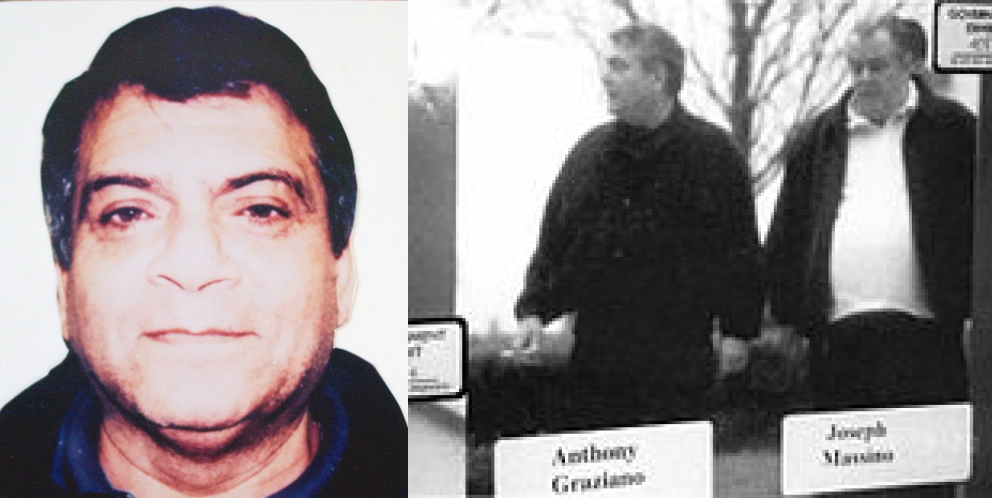
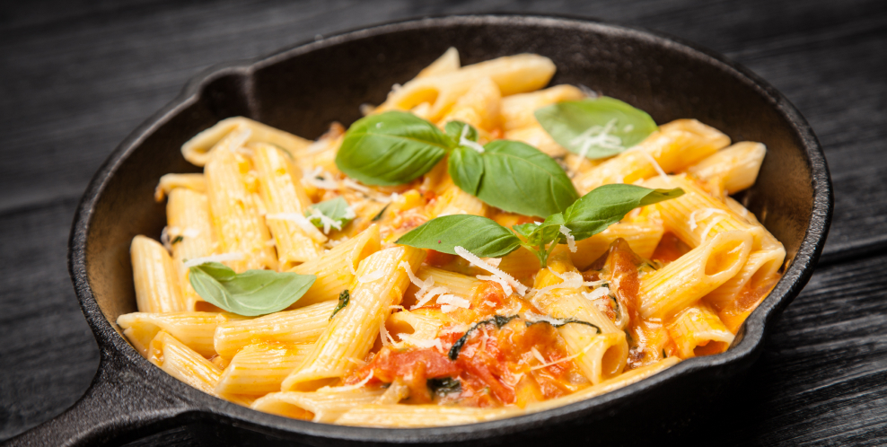
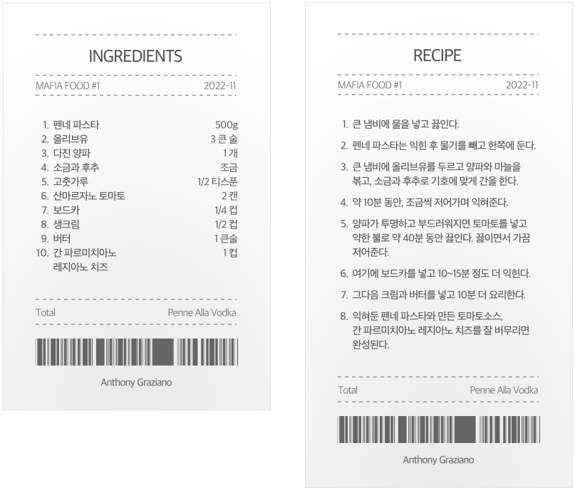
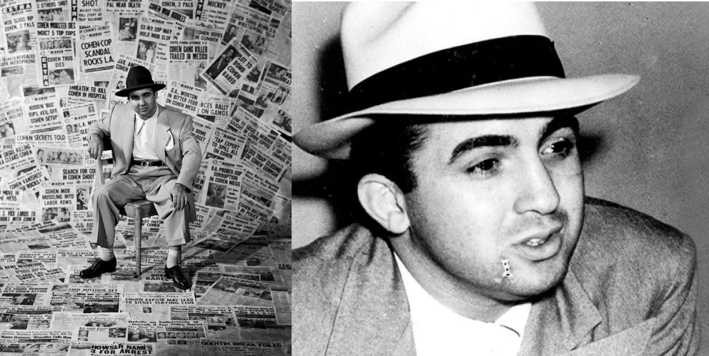

누구나 맛있는 음식을 좋아한다. 악명 높은 마피아들도 마찬가지이다. 이번에는 험상궂은 마피아들이 즐겨 먹었던 음식과 레시피를 소개하려고 한다. 마피아 음식 레시피로 직접 즐겨보자.
한 때 보난노 범죄조직의 핵심이라고 불렸던 인물, 앤서니 그라치아노(Anthony Graziano). 그는 학창시절이 끝나기 전에 지하세계에 발을 들였다. 보난노는 마약 밀매, 도박, 강도, 갈취, 보이스 피싱 등 수 많은 강력 범죄에 연루된 범죄 조직이다. 그라치아노의 절친인 조셉 마시노가 보난노의 우두머리였기 때문에 더 많은 어둠의 권력을 얻을 수 있었다.
그라치아노는 신념 앞에서 입이 무겁기로 유명했다. 하지만 그의 딸들은 달랐다. 그라치아노의 딸은 돈과 유명세를 얻기 위해 리얼리티 쇼 <Mob wives>에 출연했다. 이곳에서 그라치아노에 대한 수많은 에피소드를 풀어 그녀는 리얼리티 스타가 되었다. 심지어 가족 요리 책을 출간했고, 그라치아노 가족이 자주 해 먹던 펜네 알라 보드카(Penne Alla Vodka) 레시피를 공개했다.
그라치아노가 즐겨먹은 펜네 알라 보드카(Penne Alla Vodka)는 보드카와 펜네 파스타를 사용해 만드는 파스타 요리이다. 1980년대에 이탈리아와 미국에서 인기 있던 음식이다.
 미키 코헨(Mickey Cohen)은 1913년 9월 4일 뉴욕 브루클린에서 태어난 미국의 갱스터이다. 미키 코헨으로 잘 알려졌지만 그의 본명은 마이어 해리스 코헨(Meyer Harris Cohen)이다. 그는 길거리 갱단 '버그와 메이어 몹'을 창립한 시겔(Siegel)의 오른팔로 활동하다가 그가 살해된 후 그 큰 조직의 보스를 맡았다. 그는 1940년대 LA에서 가장 영향력 있는 보스 중 한 명이다.
미키 코헨은 시카고의 불법 도박 사업으로 유명했다. 이외에도 꽃집, 나이트 클럽, 주유소, 카지노 등 범죄에 연루된 다양한 사업을 운영했다. 그는 1949년 로스앤젤레스에서 가장 악명 높은 시민이라고 불렸을 만큼 잔혹한 갱스터이다.
프렌치 딥 샌드위치(French Dip Sandwich)는 얇은 로스트 비프를 프렌치
롤이나 바게트 위에 올려서 만드는 샌드위치이다. 비프 딥이라 불리기도
한다. 프렌치 딥 샌드위치의 핵심은 Dip하게 푹- 찍어먹을 수 있는 소스이다.
풍미가 넘치는 소스에 프렌치 롤과 로스트 비프를 찍어먹으면 그렇게
맛있다고 한다. 미키 코헨은 대부분의 사람들이 그러하듯이 프렌치 딥
샌드위치에 푹- 빠져있었다. 프렌치 딥 샌드위치는 미국의 패스트푸드점,
샌드위치 가게에서 흔히 찾아볼 수 있을 정도로 대중적으로 사랑받는
메뉴이다.
다음 레시피는 What's Cooking America에서 공개된
것으로 미키 코헨의 정확한 레시피는 아니다. 하지만 호기심 가득한 우리들의
궁금증을 조금이나마 해결해줄 수 있다.